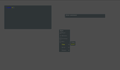
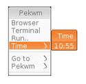
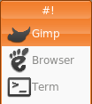

Pekwm
Dieser Artikel wurde für die folgenden Ubuntu-Versionen getestet:
Ubuntu 16.04 Xenial Xerus
Ubuntu 14.04 Trusty Tahr
Zum Verständnis dieses Artikels sind folgende Seiten hilfreich:
"All the cool kids use pekwm ..." Pekwm  (kurz "Pek") ist ein schlanker Fensterverwalter, der ursprünglich auf aewm++ basierte, sich aber mittlerweile zu einem eigenständigen Projekt entwickelt hat. Pek bietet Funktionen wie Fenstergruppierung, benutzerdefinierte Menüs, eine Übersicht der geöffneten X-Clients (quasi Panel), Xinerama-Support und vieles mehr.
(kurz "Pek") ist ein schlanker Fensterverwalter, der ursprünglich auf aewm++ basierte, sich aber mittlerweile zu einem eigenständigen Projekt entwickelt hat. Pek bietet Funktionen wie Fenstergruppierung, benutzerdefinierte Menüs, eine Übersicht der geöffneten X-Clients (quasi Panel), Xinerama-Support und vieles mehr.
|  |
| Pekwm |
Wer es nicht scheut, sich in ein Programm einarbeiten zu müssen, bekommt mit Pekwm einen flinken Fensterverwalter, der sich sehr gut an den eigenen Workflow anpassen lässt und bei dem es immer wieder etwas zu entdecken gibt. Hier soll kurz Peks Installation sowie dessen grundlegende Konfiguration besprochen werden.
Installation¶
Folgendes Paket muss installiert werden [1]:
pekwm (universe)
 mit apturl
mit apturl
Paketliste zum Kopieren:
sudo apt-get install pekwm
sudo aptitude install pekwm
Erste Pekwm-Sitzung¶
Hat man das Paket installiert, kann man Pekwm sofort ausprobieren: Nutzt man einen Displaymanager, sollte ein Eintrag für eine Pekwm-Sitzung angelegt worden sein. Dieser muss beim Login angewählt werden. Nutzt man keinen Displaymanager, passt man seine ~/.xinitrc bzw. ~/.xsessionrc an und startet daraufhin von einer virtuellen Konsole mit:[3]
startx
Des Weiteren ist es möglich, eine Pekwm-Sitzung mittels Replace-Funktion anzustoßen:
pekwm --replace &
Konfiguration¶
Allgemeines¶
Alles, was man braucht, um Pekwm zu konfigurieren, findet sich im versteckten Verzeichnis ~/.pekwm/, welches automatisch angelegt wird, wenn man Pekwm zum ersten Mal startet. Die Standard-Themen sowie z.B. das Skript, um diese Themen zu setzen, findet man in /usr/share/pekwm/. Globale Konfigurationsdateien befinden sich in /etc/pekwm/. Jede Konfigurationsdatei folgt dabei einer einheitlichen Syntax, die zu Beginn verwirrend wirken kann. ~/.pekwm/start bzw. /etc/pekwm/start folgen dieser Syntax nicht. Es wird empfohlen, sich an den automatisch angelegten Konfigurationen zu orientieren und diese nach eigenem Belieben abzuändern, insbesondere dann, wenn man sich in Peks Handhabung noch nicht sicher ist, um eine funktionierende Fensterverwaltung zu gewährleisten.
~/.pekwm/start¶
Die Datei ~/.pekwm/start ist ein Shell-Skript, welches ausgeführt wird, wenn man Pekwm startet. Es kann sein, dass die Datei nach der Installation ausführbar gemacht werden muss, um sie nutzen zu können:[3][4]
chmod +x ~/.pekwm/start
Es ist vorzuziehen, ~/.pekwm/start zu nutzen, um z.B. ein Panel zu starten, damit Fehlern (etwa Panel erscheint nicht) vorgebeugt werden kann. Das heißt, ist man es beispielsweise gewohnt, eine ~/.xinitrc anzulegen, sollte man dazu übergehen, mit der ~/.xinitrc nur noch Pekwm zu starten und alles andere über ~/.pekwm/start. Eine mögliche Konfiguration könnte so aussehen:
1 2 3 4 5 6 7 8 9 10 11 12 13 14 15 | #!/bin/sh #File: ~/pekwm/start # Setze vor dem Mittag und nach dem Mittag einen Hintergrund mit xsetroot clock=$(LANG=C date +%P) if [ $clock = 'am' ] then xsetroot -solid '#4c4c4c' else xsetroot -solid '#918069' fi # Starte tint2 tint2 & |
~/.pekwm/vars¶
~/.pekwm/vars wird automatisch beim ersten Start von Pekwm erzeugt und muss nicht genutzt werden, um Variablen zu setzen, da Variablen in jeder Konfigurationsdatei von Pekwm gesetzt werden können. Pekwm unterscheidet Variablen, die mit $ und mit $_ gesetzt werden.
$¶
Variablen die nur für Pekwm gelten sollen, werden mit $ gesetzt. Dies bietet sich etwa an, wenn man in einem Thema eine bestimmte Schriftart nutzen möchte:
$font = "meinvielzulangerpekwmfont 05_55 caps-6Left#XFT"
Im weiteren Verlauf des Thema könnte man nun also jedesmal $font nutzen, um meinvielzulangerpekwmfont 05_55 caps-6Left#XFT zu schreiben.
~/.pekwm/config¶
Die Datei ~/.pekwm/config bestimmt das grundsätzliche Verhalten von Pekwm. Hier wird etwa festgelegt, wieviele Arbeitsflächen man verwenden möchte und wie diese heißen, ob der Kommando-Dialog eine ~/.pekwm/history anlegen soll und wieviele Einträge diese enthalten soll, wo sich die für Pekwm relevanten Konfigurationsdateien befinden, usw.
~/.pekwm/keys¶
In ~/.pekwm/keys finden sich die Tastenkürzel, um Pekwm zu bedienen. Darunter befinden sich einfache Tastenkürzel wie die Belegung der Pfeiltasten beim Navigieren durch Menüs und komplexe Tastenkürzel sog. "Keychains", die ausgelöst werden, indem man zuerst eine Tastenkombination und daraufhin eine weitere Taste drückt. Um herauszufinden, wie eine Taste heißt, eignet sich das Programm aus dem gleichnamigen Paket xev. Wer möchte, kann so ziemlich alles in Pekwm über Tastenkürzel erledigen. Um etwa das Root-Menü von Pekwm über die Taste
Super bzw.
Windows anzuzeigen, kann man sich unter "Global {" ein Tastenkürzel wie folgt anlegen:
1 | KeyPress = "Super_L" { Actions = "ShowMenu Root" }
|
Ein Eintrag, um ein Xterm über Alt + T zu starten, würde man so anlegen:
1 | Keypress = "Mod1 T" { Actions = "Exec xterm" }
|
Möchte man die Fensterdekorationen abstellen, kann man das z.B. über folgende Keychain (erst Strg + Alt + D , dann B ) erledigen:
1 2 3 | Chain = "Ctrl Mod1 D" {
KeyPress = "B" { Actions = "Toggle DecorBorder" }
}
|
~/.pekwm/menu¶
In ~/.pekwm/menu stellt man die Menüs von Pekwm ein. Ein einfacher Eintrag hat folgende Struktur:
1 | Entry = "NAME" { Actions = "Exec KOMMANDO &" }
|
Ein Untermenü folgende:
1 2 3 4 | Submenu = "NAME" {
Entry = "NAME" { Actions = "Exec KOMMANDO &" }
Entry = "NAME" { Actions = "Exec KOMMANDO &" }
}
|
Eine Linie, die die Menüeinträge trennt, wird mit
1 | Separator {}
|
hinzugefügt.
Dynamische Menü-Einträge¶
 Dynamische Menü-Einträge werden bei jedem Aufruf des Menüs generiert. Hierfür werden kleine Programme genutzt, die in jeder Sprache geschrieben sein können, die Pekwm-Syntax ausgeben kann. Beispielsweise kann man sich ein kleines Bash-Skript anlegen, um einen Eintrag zu erhalten, der die aktuelle Uhrzeit in einem Pekwm-Menü anzeigt und bei Verwendung das Programm Xclock aufruft:
1 2 3 4 5 6 7 8 9 | #!/bin/bash clock=$(date +'%H:%M') cat <<EOF Dynamic { Entry = "$clock" { Actions = "Exec xclock" } } EOF |
Dieses muss ausführbar gemacht werden:[3][4]
chmod +x /Pfad/zum/Skript
und kann danach über einen Eintrag in ~/.pekwm/menu genutzt werden:
1 | Entry = "" { Actions = "Dynamic /Pfad/zum/Skript" }
|
Custom Menus¶
Es ist möglich, Menüs anzulegen, die unabhängig vom Root-Menü aufgerufen werden können. Dies bietet sich zum Beispiel an, wenn man Programme ohne eine grafische Oberfläche über eine grafische Oberfläche kontrollieren möchte oder auch einfach nur zur Verwaltung von Lesezeichen. Zum Beispiel kann man sich in ~/.pekwm/menu ein Menü wie folgt anlegen (natürlich nicht innerhalb bestehender Menüs):
1 2 3 4 | menuname = "web" {
Entry = "UUText" { Actions = "Exec xterm -e w3m http://ubuntuusers.de" }
Entry = "UUGui" { Actions = "Exec epiphany-browser http://ubuntuusers.de" }
}
|
Danach muss in ~/.pekwm/keys ein Tastenkürzel angelegt werden, das das Menü aufruft. Unter Global {
1 | Keypress = "Mod4 U" { Actions = "ShowMenu menuname" }
|
eintragen, um das Menü mit Super + U aufzurufen.
Icons im Menü¶
 Den Menüs können Icons hinzugefügt werden. Hierfür muss in der Datei ~/.pekwm/config im Abschnitt Files { ein Icon-Pfad angegeben werden:
1 2 3 4 5 6 7 8 9 | Files {
Keys = "~/.pekwm/keys"
Mouse = "~/.pekwm/mouse"
Menu = "~/.pekwm/menu"
Start = "~/.pekwm/start"
AutoProps = "~/.pekwm/autoproperties"
Theme = "~/.pekwm/themes/default"
Icons = "~/.pekwm/icons/" #Hier steht der Icon-Pfad
}
|
und im Abschnitt Menu { bestimmt werden, dass Icons angezeigt werden:
1 2 3 4 5 6 7 8 9 | Menu {
DisplayIcons = "True" #True zeigt Icons, False zeigt keine
Icons = "DEFAULT" {
Minimum = "30x30" #minimale Icon-Größe
Maximum = "30x30" #maximale Icon-Größe
}
#Hier stehen per Default noch andere Werte
}
|
Verweist der Icon-Pfad also auf das Verzeichnis ~/.pekwm/icons/ und befindet sich darin etwa das Icon gimp.png könnte man sich in ~/.pekwm/menu einen Eintrag wie folgt anlegen:
1 | Entry = "Gimp" { Icon = "gimp.png"; Actions = "Exec gimp &" }
|
~/.pekwm/themes¶
Im Verzeichnis ~/.pekwm/themes werden die benutzerspezifischen Themen abgelegt (globale Themen finden sich unter /usr/share/pekwm/themes). Diese bestehen meist aus ein paar PNGs und einer Datei theme, welche sich auch nach der Pekwm-Syntax richtet. Der Name eines Themes wird durch den Namen des Verzeichnisses bestimmt, in dem sich die zum Theme gehörenden Dateien befinden. Nutzt man Pekwm zum ersten Mal, ist das Verzeichnis leer. Um sich einen kleinen Überblick verschaffen zu können, sollte man sich eines der Default-Themen von Pekwm in diesen Ordner kopieren:
cp -R /usr/share/pekwm/themes/default ~/.pekwm/themes/MEINTHEMA
Interessant ist, dass sich die Buttons der Themen auch mit Aktionen belegen lassen. So könnte sich, hat man ~/.pekwm/themes/meinthema wie beschrieben angelegt, ein Button anlegen lassen, der ein Xterm startet, indem man sich die Sektion Define = "BaseButtons" { sucht und einen neuen Button auf der linken Seite des Fensters erstellt:
1 2 3 4 5 6 7 | Left = "Term" {
Focused = "Image button.png"
Unfocused = " Image button_unfocus.png"
Hoover = "Image button_hover.png"
Pressed = "Image button_press.png"
Button = "1" { Actions = "Exec xterm" }
}
|
Ändert man in diesem Beispiel etwa die Zeile
1 | Button = "1" { Actions = "Exec xterm" }
|
nach
1 | Button = "1" { Actions = "SendToWorkspace Next; GotoWorkspace Next" }
|
wird kein Xterm mehr gestartet, sondern die Anwendung auf die nächste Arbeitsfläche verschoben und auch gleich auf diese gewechselt. Es ist stets darauf zu achten, dass man sich an bestehende geschweifte Klammern (curly brackets) hält. Weitere Themen können über das Paket
pekwm-themes
mit apturl
Paketliste zum Kopieren:
sudo apt-get install pekwm-themes
sudo aptitude install pekwm-themes
hinzugefügt oder bei Box-Look.org heruntergeladen werden.
~/.pekwm/autoproperties¶
~/.pekwm/autoproperties kann Pekwms mächtigste Konfigurationsdatei sein. Hier kann etwa festgehalten werden, dass ein bestimmtes Programm ohne Fensterrahmen starten soll, auf welcher Arbeitsfläche das Programm gestartet werden soll, ob bestimmte Programmtypen, etwa Terminal-Emulatoren, automatisch gruppiert werden sollen, welche Fenstergröße ein bestimmtes Programm haben soll und so weiter. Möchte man beispielsweise, dass Terminal-Emulatoren auf der ersten Arbeitsfläche starten, ohne Fensterrahmen, und das horizontal, aber nicht vertikal maximiert, legt man sich einen Eintrag wie folgt an:
1 2 3 4 5 6 7 8 | Property = "(term|rxvt),(erm|xvt)" {
ApplyOn = "Start New"
Border = "False"
Titlebar = "False"
MaximizedHorizontal = "True"
MaximizedVertical = "False"
Workspace = "1"
}
|
Sollen darüberhinaus immer 3 gestartete Terminal-Emulatoren in einem Fenster gruppiert werden, könnte eine weitere Regel so aussehen:
1 2 3 4 5 6 7 8 | Property = "(term|rxvt),(erm|xvt)" {
ApplyOn = "New"
Group = "term" {
Size = "3"
FocusedFirst = "True"
Raise = "True"
}
}
|
Für ein Xterm, sichtbar auf allen Arbeitsflächen und eingeblendet am unteren Bildschirmrand (Bildschirmgröße: 1024x600), ohne Fensterdekorationen, könnte man sich folgende Regel anlegen:
1 2 3 4 5 6 7 | Property = "^xterm,^XTerm" {
ApplyOn = "Start New"
FrameGeometry = "1024x200+0-0"
Sticky = "True"
Titlebar = "False"
Border = "False"
}
|
 Übersichtsartikel
Übersichtsartikel- Erstellt mit Inyoka
-
 2004 – 2017 ubuntuusers.de • Einige Rechte vorbehalten
2004 – 2017 ubuntuusers.de • Einige Rechte vorbehalten
Lizenz • Kontakt • Datenschutz • Impressum • Serverstatus -
Serverhousing gespendet von